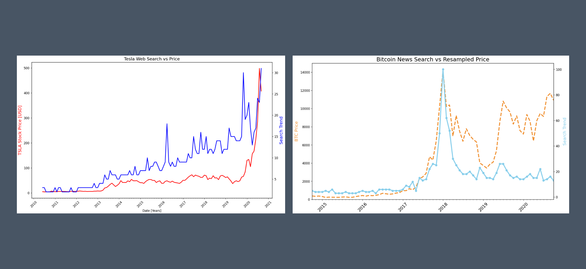

Tesla stock prices, Bitcoin trends, and unemployment benefits
This Google Colab notebook explores various datasets related to Tesla stock prices, Bitcoin trends, and unemployment benefits search data. It analyzes and visualizes the correlations between these factors over time, using Python libraries like Pandas and Matplotlib. The notebook covers tasks such as data loading, cleaning, visualization, and interpretation to understand relationships and trends in the provided datasets.